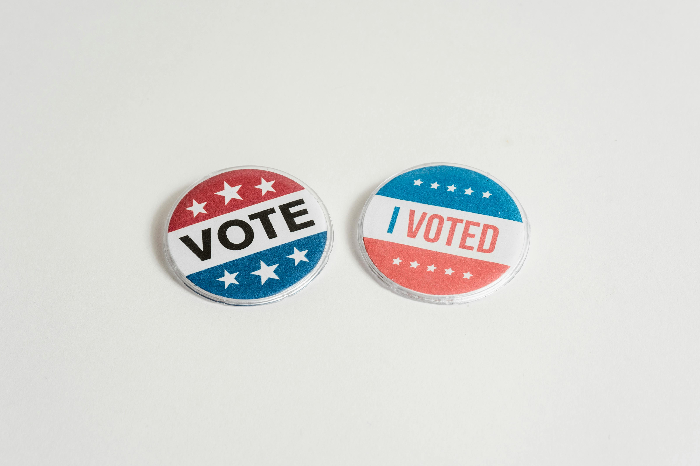

Fall 2023
This is a sample of code I wrote as a Graduate Teaching Assistant for the Political Science Research Methods course at Appalachian State University. At the beginning of each semester, students collect survey data about food preferences. Their results are combined into one dataset with between 500 and 1,500 observations, depending on the size of the class. Students then use this data to complete multiple assignments throughout the semester.
In previous semesters, these assignments were completed in Microsoft Excel. I was tasked with recreating these assignments in R in order to diversify students' skill sets and introduce them to a program more commonly used in political science research. The code that I have selected samples several different assignments on cleaning data and creating graphs using ggplot2.

This is a short text analysis program I wrote in my Programming for Business Analytics course. With this program, users can upload any text file and create a dictionary of word frequencies. Each unique word in the file will be stored alongside a count of how many times it appears in the text.

I completed this group project in my Programming for Business Analytics course with my classmate, Kenneth Wanjiru. We used data from the U.S. Department of Health & Human Services to investigate whether cardiovascular disease rates changed in the United States between 1999 and 2019. Our paper includes descriptive statistics and graphs we created using Seaborn.

This is the final research paper I wrote for my Political Analytics course. I used data from the 2020 American National Election Study to investigate whether or not personal experiences with COVID-19 influenced voters' perception of former President Trump during the pandemic. This paper incorporates descriptive statistics and multiple regression models, including interaction effects between COVID-19 exposure and partisan identification.